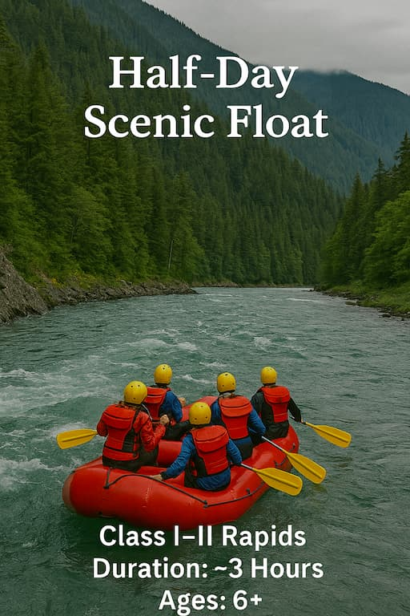
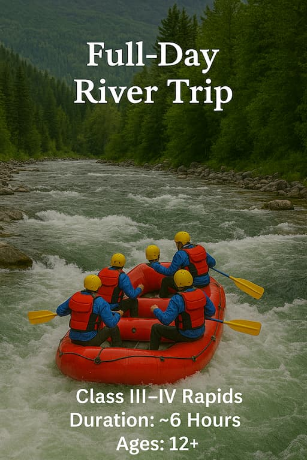
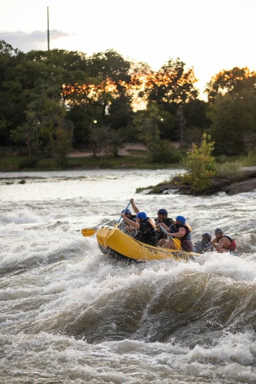

Find Your Perfect Run
Pick from our most popular trips. Every booking includes gear, a thorough safety briefing, and a pro guide.
Our Trips
| Trip Name | Description | Duration | Minimum Age | ||
|---|---|---|---|---|---|
|  | Half-Day Scenic Float | Perfect for families and first-timers. Class I-II water, abundant wildlife, relaxed pace. | ~3 hours | 6+ | Request Dates |
|  | Full-Day Canyon Run | A balanced mix of splashy rapids and calm pools with a riverside lunch stop. Class II-III. | ~6 hours | 10+ | Request Dates |
|  | Advanced Rapids Challenge | For thrill-seekers ready for continuous action. Strong paddling required. Class II-IV. | ~5 hours | 14+ | Request Dates |
Have a group or need a custom itinerary?
Contact Us